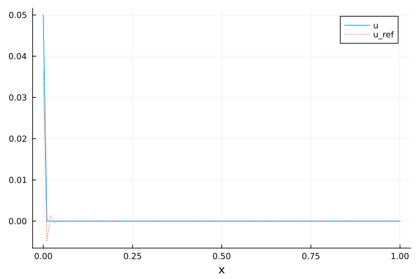

Linear transport (FEM-SUPG)
This example demonstrates the application of the FEM Streamline Upwind Petrov-Galerkin method to a linear transport equation.
Maths
There are several ways to present the method, here is one adapted from the book of Zienkiwicz et al. (The Finite Element Method for Fluid Dynamics).
We consider the following transport equation:
\[\begin{aligned} \partial_t u + c \cdot \nabla u = 0 \\ u(0, t) = u_{in}(t) \end{aligned}\]
where $c$ is the transport velocity. To ease the demonstration, we restrict ourselves to a 1D equation at a constant velocity : $\partial_t u + c \partial_x u = 0$. Let's introduce $\chi(t)$ a (characteristic) curve corresponding to this equation, then
\[\dfrac{du}{dt} = \dfrac{\partial \chi}{\partial t} \dfrac{\partial u}{\partial x} + \dfrac{\partial u}{\partial t}\]
so that with $\partial \chi / \partial t = c$ we have that $du/dt$ is zero along the characteristic curve. Let's note $u^n(x)$ the solution at point $x$ and time $n \Delta t$. Let's also note $\delta = c \Delta t$ and apply a first order Taylor expansion in time for $du/dt$:
\[\dfrac{1}{\Delta t}(u^{n+1}(x) - u^n(x - \delta)) = 0\]
The $x - \delta$ comes from the fact that we are differentiating along the characteristic curve. Then, a Taylor expansion in space of $u^n(x - \delta)$ leads to
\[u^n(x - \delta) = u^n(x) - \delta \partial_x u^n + \dfrac{\delta^2}{2} \partial^2_x u^n\]
The time-space discretization now reads
\[u^{n+1} = u^n - \delta \partial_x u^n + \dfrac{\delta^2}{2} \partial^2_x u^n\]
To compute the weak form, we multiply by a test function $v$ and integrate over the whole domain. An integration by parts is performed on the last term, ignoring boundary terms for this specific example.
\[\begin{aligned} & \int_\Omega u^{n+1} v = \int_\Omega u^n v - \int_\Omega \delta (\partial_x u^n)v + \int_\Omega \dfrac{\delta^2}{2} (\partial^2_x u^n) v \\ & \int_\Omega u^{n+1} v = \int_\Omega u^n v - \int_\Omega \delta (\partial_x u^n)v - \int_\Omega \dfrac{\delta^2}{2} \partial_x u^n \partial_x v \\ & \int_\Omega u^{n+1} v = \int_\Omega u^n v - \int_\Omega \delta (\partial_x u^n) \left(v +\dfrac{\delta}{2} \partial_x v \right) \\ \end{aligned}\]
Hence, the weak formulation is quite straigthforward, it simply consists in replacing the test function $v$ in the advection term by $v + c\Delta t \partial_x v / 2$.
Code
using Bcube
using LinearAlgebra
using StaticArrays
using Plots
const degree = 1 # Function-space degree (Taylor(0) = first order Finite Volume)
const nite = 250 # Number of time iteration(s)
const CFL = 0.5 # CFL number
const nx = 101 # Number of nodes in the x-direction
const ny = 41 # Number of nodes in the y-direction
const lx = 1.0 # Domain width
const ly = 2.0 # Domain height
const c = SA[1.0] # Transport velocity
@assert degree >= 1 "Cannot apply Dirichlet when degree = 0!"Build mesh, and prepare output
mesh = line_mesh(nx; xmax = lx, names = ("West", "East"))
out_dir = joinpath(@__DIR__, "../../../myout/linear_transport")
mkpath(out_dir)Time step defined by a CFL condition
const Δt = CFL * min(lx / (nx - 1), ly / (ny - 1)) / norm(c)
t = 0.0Inlet boundary condition. Use f_west(x, t) = 1.0 for a square.
f_west(x, t) = sin(10 * t) # better start with 0 at t=0Function space, trial and test FESpace, with the boundary condition
fs = FunctionSpace(:Lagrange, degree)
U = TrialFESpace(fs, mesh, Dict("West" => f_west))
V = TestFESpace(U)Measure for domain discretization
dΩ = Measure(CellDomain(mesh), 2 * degree + 1)Compute 'h', the cell characteristic length
vol = MeshCellData(Bcube.compute(∫(PhysicalFunction(x -> 1))dΩ))SUPG test function : two equivalent formulae: $ \tilde{v} = v + \dfrac{\Delta t}{2} c \cdot \nabla v$ or $ \tilde{v} = v + \alpha \dfrac{\Delta x}{2} \dfrac{c}{|c|} \cdot \nabla v$ where $\alpha = c \Delta t / \Delta x$ is the CFL number.
supg(v) = v + Δt / 2 * c ⋅ ∇(v)
# supg(v) = v + CFL * h / (2 * norm(c)) * (c ⋅ ∇(v))Bilinear forms (mass and advection) definitions and assembly
a(u, v) = ∫(u ⋅ v)dΩ # Mass bilinear form : no supg
b(u, v) = ∫((c ⋅ ∇(u)) ⋅ supg(v))dΩ # Convection bilinear form
A = assemble_bilinear(a, U, V)
B = assemble_bilinear(b, U, V)
M = I - Δt * inv(Matrix(A)) * B #WARNING : really expensive !!!Build FE functions : one for the computed solution, one for the reference solution interpolated on the FESpace (that the best we can obtain!)
u = FEFunction(U)
apply_dirichlet_to_vector!(u.dofValues, U, V, mesh, t)
u_ref = FEFunction(U)Prepare animation. Since the mesh and the FESpace are "trivial", we directly extract the mesh coordinates into a vector and the dof values are in the same order.
anim = Animation()
x = [coords(node, 1) for node in get_nodes(mesh)]Let's loop
for i in 1:nite
global t
# Update time
t += Δt
# Update solution
u.dofValues .= M * u.dofValues
# Apply bnd condition : we can also set M[1,:] = [1, 0...]
apply_dirichlet_to_vector!(u.dofValues, U, V, mesh, t)
# Evaluate and project reference solution on FESpace
projection_l2!(
u_ref,
PhysicalFunction(x -> (x[1] - c[1] * t) > 0 ? 0.0 : f_west(0, t - x[1] / c[1])),
mesh,
)
# Build animation
plt = plot(x, u.dofValues; label = "u", xlabel = "x")
plot!(x, u_ref.dofValues; label = "u_ref", ls = :dot)
frame(anim, plt)
endHere is the output animation
g = gif(anim, joinpath(out_dir, "transport_supg.gif"))
display(g)
This page was generated using Literate.jl.